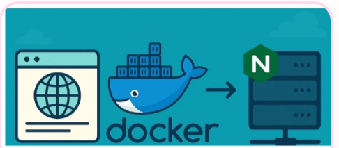

aimodels-fyi
Jun 1
A beginner's guide to the Ltx-Video-0.9.7 model by Lightricks on Replicate
Ltx-Video-0.9.7 adalah model video generatif yang dapat digunakan untuk membuat video dari prompt.
Replicate membantu pengguna mencoba model AI tanpa harus menyiapkan infrastruktur machine learning sendiri.
Getting Started
Mulai dengan memilih model, membaca input yang dibutuhkan, kemudian menjalankan model menggunakan prompt yang sesuai.
Conclusion
Model video generatif dapat membantu proses pembuatan konten menjadi lebih cepat dan mudah untuk dicoba.
Ali Nazari
May 31
Securing Redis with ACLs and Integrating Redis Insight in Docker
Redis ACL digunakan untuk mengatur pengguna dan hak akses sehingga hanya operasi yang diizinkan dapat dijalankan.
Redis Insight dapat membantu memantau dan mengelola Redis yang berjalan di Docker.
Configure ACLs
Buat pengguna Redis dengan izin yang sesuai kebutuhan aplikasi dan gunakan autentikasi sebelum mengakses database.
Conclusion
Penggunaan ACL dan pengelolaan akses yang tepat membantu meningkatkan keamanan Redis dalam lingkungan container.

Vishnu Satheesh May 31
How to Deploy a Web Application Using Docker and NGINX on Your Own Server
Deploying a web application does not need to be a complicated process.
With Docker, NGINX, and your own server, you can get your application live in no time.
In this blog, I will show you how to serve your application with a domain, route traffic with NGINX,
and run it inside a Docker container. This guide is intended for a Linux-based server.
Step 1: Setup Docker
First, set up Docker. Create a Dockerfile in your project directory to define how the application should be containerized.
FROM node:20-alpine
WORKDIR /app
COPY package*.json ./
RUN npm install
COPY . .
CMD ["npm", "start"]
Step 2: Build and Run the Docker Container
After creating the Dockerfile, build the Docker image and run the container on your server to make sure the application works correctly.
Conclusion
Deploying a web application using Docker and NGINX becomes easier when the process is divided into clear steps.